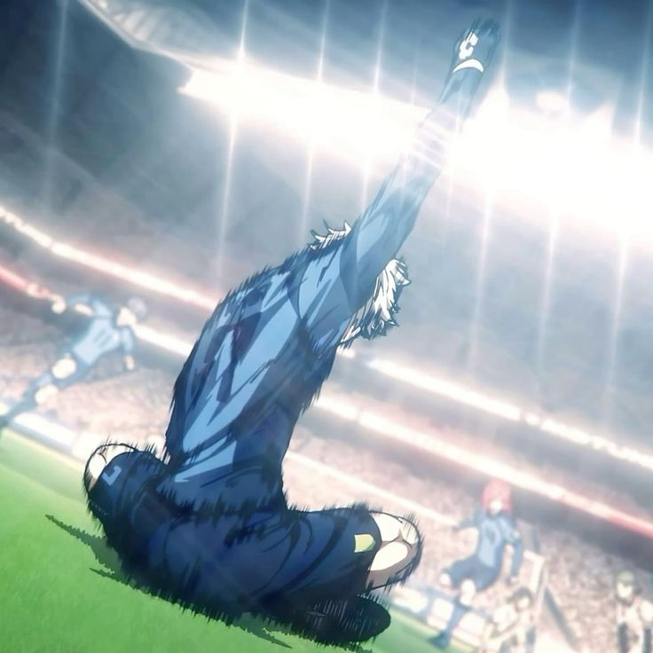

𝄖 ｡ #BLUE LOCK PROJECT
⚽︎ STATS ㈱꯭
⟢ Nombre: Reiko Mikage
⟢ Edad: 17
• Pase: 88
• Tiro: 113
• Físico: 52
• Regate: 94
• Defensa: 60
• Velocidad: 61

Reo Mikage — U20
EDICIÓN DE BLUE LOCK ELEVEN VS SUB 20 DE JAPÓN
Estilo y Adaptación del Camaleón de Reo Mikage
Legendario
(Pasiva de Estilo – Pase)
Eres un jugador nacido para adaptarse al entorno que te rodea. Tu talento radica en la versatilidad absoluta, capaz de ocupar cualquier zona del campo con total soltura, analizando cada jugada con tu conciencia espacial y traduciéndose en decisiones efectivas que elevan la fluidez del equipo. No importa si es defensa, centrocampista o delantero, todo se te da bien. Gracias a tu visión de campo avanzada y lectura del juego, tus estadísticas base se ven potenciadas por una conciencia espacial otorgando un aumento pasivo de +5 puntos en todas tus estadísticas. Tu control del juego te permite distribuir y desequilibrar con precisión quirúrgica, por lo que Pase y Regate se ven aumentados en +11 puntos inicialmente. Tiro, Defensa, Físico y Velocidad se ven aumentados en +8 puntos. Como efecto acumulable, cada vez que venzas en un duelo (con o sin ruleta), Pase y Regate aumentan en +6 puntos hasta 3 veces. Además, reduces -13 puntos en defensa enemiga en encuentros de Pase vs Defensa y Regate vs Defensa una vez ganes la acumulable máximo. Tus pases pueden tomar curvatura libre sin alterar su precisión, y al ejecutar pases a larga distancia, solo sufres un 35% de reducción por distancia, a diferencia del 50% convencional. Pero lo que te vuelve verdaderamente letal es tu capacidad de replicar jugadas ajenas: Tienes la habilidad de copiar cualquier jugada de otro jugador dentro del campo (ya sea una jugada de Genio, de alto rendimiento o estilo único) y reproducirla perfectamente, ganando +5 puntos en la estadística central que la jugada representa (ya sea Pase, Tiro, Defensa, Regate, Físico o Velocidad). Este aumento permanece indefinidamente, pero no puedes volver a replicar una jugada para seguir acumulando la misma estadística. Sin embargo, puedes repetir el proceso en otra categoría distinta (por ejemplo, primero en Tiro, luego en Defensa). Aunque tu capacidad de réplica tiene sus límites: no puedes copiar pasivas ni jugadas exclusivas de jugadores del New Gen Eleven, si copias una de Velocidad o Físico arriesgas lesión con una ruleta. Sin embargo, tienes la capacidad para adaptarte al estilo salvaje y explosivo del demonio Ryusei Shidou, la técnica precisa, control absoluto de Seishiro Nagi o tiros con efecto de Kenyu Yukimiya, así como las capacidades defensivas de un jugador de categoría primera división como Oliver Aiku.
Camaleón
Una habilidad que representa tu naturaleza adaptable, capaz de cambiar de rol en cualquier momento del partido. Con esta habilidad puedes copiar y utilizar una pasiva activa dentro del campo (ya sea de un aliado o enemigo), manteniéndola sólo durante la jugada (un post). Puedes copiar todo tipo de pasivas, sin importar si son de tipo ofensivo, defensivo o mixtas, Como ventaja única por tu acondicionamiento físico superior, si una pasiva contiene características de Físico o Velocidad a ruletas de riesgo (como probabilidad de lesión), esa ruleta se ajusta automáticamente a 40% de no lesión y 60% de lesión.
Ejecución:
Para activar esta habilidad, debes redactar claramente qué pasiva copias (con nombre y fuente), usarla de forma contextual dentro de tu jugada, y hacer referencia explícita al uso de la habilidad como Camaleón. Tras la ejecución, no tiene cooldown, solo las habilidades de las pasivas que copias respetando su tiempo de enfriamiento de las habilidades usadas.
Gyro Shot – Estilo del Camaleón
Un disparo con efecto que cambia de trayectoria y se caracteriza por su precisión, a pesar de ser un tiro curvo no tan violento comparado a otros con estas características. La elevación que toma aparenta desviarse de la portería aparentando que se va fuera sin embargo desciende repentinamente entrando en la red reduciendo un -8 en la estadística del portero. Si un rival interviene en la trayectoria del tiro es forzado a Tiro vs Defensa con reducción de -20% en la estadística de tu oponente.
Ejecución:
Debes redactar como ejecutas el tiro con efecto que desciende en curva hacía la portería pareciendo que se va fuera, tienes que hacer mención de Gyro Shot – Estilo del Camaleón esperando 7 turnos globales de Cooldown una vez lo uses.
Control Absorbente x Despeje Giratorio – Estilo del Camaleón
Una técnica que redefine lo imposible: convertir un rechazo, un mal pase, o incluso una posición incómoda en una oportunidad brillante. El dominio del cuerpo y la técnica se fusionan para realizar un giro perfecto en el aire o el suelo, conectando con el balón en un disparo/pase giratorio que transforma en control absorbente. Has copiado con maestría el talento inhumano del control perfecto y la improvisación total, mediante esta habilidad anulas el enfrentamiento en un balón suelto, rechace o pase. Mediante un giro técnico y estético, golpeas el balón sin importar el momento logrando mantener la fluidez y precisión de la jugada. Ya sea para asistir o despejar con elegancia, esta técnica convierte el terreno en una plataforma para la creatividad pura. Tu aumenta en +6 puntos en Pase al momento de usar esta habilidad hasta 2 veces como efecto acumulable. La dirección del pase puede adquirir efecto curvado o flotante a los 15m de distancia. Si tu equipo recupera el balón tras tu acción, ganan un bono temporal de +5 en Tiro, Pase y Regate durante esa misma jugada. La defensa que busque interceptar se ven forzados a -20% con duelo Defensa vs Pase.
Ejecución:
Para utilizar Control Absorbente x Despeje Giratorio – Estilo del Camaleón, debes narrar una jugada donde el balón te llegue en un ángulo o situación incómoda y tú, con elegancia y dominio técnico, conectes con él mediante un giro parcial o completo para transformar la situación. La acción puede ser usada como pase o tiro (dependiendo del contexto), y se debe hacer mención directa al uso de la habilidad. Una vez usada, la habilidad entra en su cooldown de 7 turnos globales.
Defensa Asfixiante – Estilo Camaleón
Has absorbido el instinto de un defensor que no da respiro. Esta técnica representa el dominio total de la presión corporal y el cierre de espacios al punto de eliminar por completo las rutas del rival. Tu cuerpo se convierte en una serpiente asfixiando su presa como una sombra que persigue y encierra a su presa, obligando a Regate vs Defensa, Tiro Vs Defensa o Defensa vs Pase, depende lo que se requiera el post. No se trata de quitar el balón directamente, sino de sofocar la libertad del atacante: niegas el pase, el giro y el espacio, ejecutando un marcaje tan ajustado que corta el oxígeno de la jugada sin hacer contacto. Tienes +12 puntos en Defensa y +10 en Físico mientras mantengas una marca asfixiante durante el enfrentamiento. Durante este enfrentamiento, si el rival no logra desmarcarse o ejecutar su acción con claridad, se le aplica una reducción de -20 puntos en la estadística que utilice (Regate, Pase o Tiro), siempre que tu narración muestra cómo reducir su margen de ejecución. Si el rival pierde la ruleta forzada de Regate vs Defensa o Pase vs Defensa o Tiro vs Defensa, obtienes un aumento temporal de +6 puntos en Pase o Regate (a elección) para la siguiente jugada ofensiva que realices.
Ejecución:
Para activar Defensa Asfixiante – Estilo Camaleón, tu narración debe reflejar un marcaje pegajoso, constante, sin dejar espacio para respirar. No buscas robar el balón en un solo movimiento, sino presionar con el cuerpo, cerrar líneas, negar la recepción y limitar el accionar del rival. Debe mencionarse el uso de la habilidad y detallar cómo ejecutas la presión. Tras su uso la habilidad entra en cooldown de 7 turnos globales.
Movimiento de flujo
Dragon Drive Shot – Estilo del Camaleón
Este disparo no sigue patrones ni estructura, no es elegante, es salvaje, brutal y completamente egoísta. Una técnica creada por el deseo de romper la red sin importar el método. Mediante tu estilo adaptable, réplicas a la perfección el instinto animal contenido en un disparo inhumano: una patada desmedida donde la violencia y la precisión se combinan en una sola ejecución. Tu cuerpo toma la postura de una bestia, forzando el disparo como si tu pierna fuera una lanza viva. Tus músculos se tensan, tu visión se estrecha, y en ese instante, todo lo que no sea portería deja de existir. Has copiado el estilo ofensivo de una criatura salvaje que no piensa en fallar. Tu Tiro aumenta en +10 puntos al activar esta habilidad. La reducción de la Defensa del rival se reduce en -25% puntos durante el enfrentamiento y es forzado a Tiro vs Defensa.
Ejecución:
Debes hacer mención del uso de la habilidad en un balón que este rechazado o en pleno aire para hacer referencia a Tiro Dragón – Estilo del Camaleón rematando con un disparo feroz. Esta habilidad tiene 8 turnos globales de Cooldown.

Nagi Seishiro — U20
EDICIÓN BLUE LOCK ELEVEN VS SUB 20 DE JAPÓN
Despertar del Genio Dormido de Seishiro Nagi
Legendario
(Pasiva de Estilo – Tiro)
Eres un genio excepcional con mucho talento, capaz de controlar el balón sin importar las circunstancias o la posición en la que te encuentres. Desde el inicio tienes un aumento de +5 en todas las estadísticas y tu instinto impredecible hace que cualquier jugada sea imposible de leer por un usuario de meta visión. Tienes un control único que te permite maniobrar el balón de maneras que la mayoría de jugadores no puede hacer, obteniendo +8 de Regate desde el inicio y cada vez que ganes en duelos de ruleta o anulación de Regate vs Defensa aumentas +3 puntos hasta un total de 4 veces (máximo 12 puntos). Tus disparos, junto con tu control absoluto, te dan +10 de Tiro como tu mejor arma, +5 si recibes un pase exitoso en tu post (no acumulable). Cada vez que ganes en duelos (sin ser Regate vs Defensa o Defensa vs Pase) ganas +3 de Tiro hasta un máximo de 6 veces (máximo 18 puntos). Tu control absorbente te permite interceptar tiros y pases con facilidad, otorgando +7 de Defensa, y si ganas duelos de Tiro vs Defensa y Defensa vs Pase en ruleta o anulación, sumas +5 de Defensa hasta 3 veces (máximo 15). Además, tienes +4 de Físico y +7 de Pase, +3 en Velocidad por tu buen desplazamiento. No pueden rebajarte Tiro, Regate ni Defensa por otras pasivas (salvo de Primera División o superior).
Control absorbente x Volea
Esta habilidad te permite anotar goles incluso estando marcado o en posiciones incómodas. Recibes un pase y puedes anular el duelo para finalizar un tiro al arco, ganando +8 de Tiro de manera permanente hasta 2 veces. Si un rival intenta interponerse, reduces -22% en su Defensa forzando duelo Tiro vs Defensa.
Ejecución:
Debes redactar el uso de la habilidad y hacer referencia a Control absorbente x Volea. Tiene 6 turnos globales de Cooldown.
Tiro de volea falsa
Permite ejecutar una volea que aparenta ir directa pero cambia el ángulo o trayectoria en el último instante, engañando al rival. Primero obligas a un duelo de Regate vs Defensa, aumentando +12 puntos a tu oponente y reduciendo -22% su Defensa. Luego rematas al arco, reduciendo -7 al portero y si un defensor interviene, reduces -18% en Defensa y Velocidad forzando duelos de Tiro vs Velocidad o Tiro vs Defensa.
Ejecución:
Redacta cómo engañas al rival con la volea y menciona la habilidad Tiro de volea falsa. Cooldown de 7 turnos globales.
Control absorbente x Regate
Regate que permite burlar a tus rivales. Al ejecutar un regate, tus rivales entran en un duelo Regate vs Defensa, reduciendo su defensa -24%, y si los superas, aumentas +10 en Tiro durante tu jugada.
Ejecución:
Redacta el regate y menciona el uso de la habilidad Control absorbente x Regate. El bono de +10 en Tiro desaparece al final de la jugada. Cooldown de 7 turnos globales.
Aura de Muerte
Activa un estado de motivación donde te vuelves impredecible incluso para jugadores con buena lectura del campo. Tras ganar un duelo 1vs1, obtienes +6 en todas las estadísticas durante el post y reduces -10 en las estadísticas de ruleta de tus oponentes. No requiere cooldown, pero debes forzar al menos un duelo por post.
Movimiento especial en estado de flujo
Tiro Giratorio
Permite ejecutar un disparo con giro que deja el balón suspendido momentáneamente en el aire antes de rematar con fuerza y efecto. Reduce -13 al portero y fuerza Tiro vs Defensa con reducción de -35% si el rival tiene meta visión. Ninguna habilidad puede anularlo.
Ejecución:
Se usa solo con balón en el aire o pase aéreo. Mencionar "Mucho gusto Japón, yo soy… ¡Seishiro Nagi!". Cooldown de 9 turnos globales.